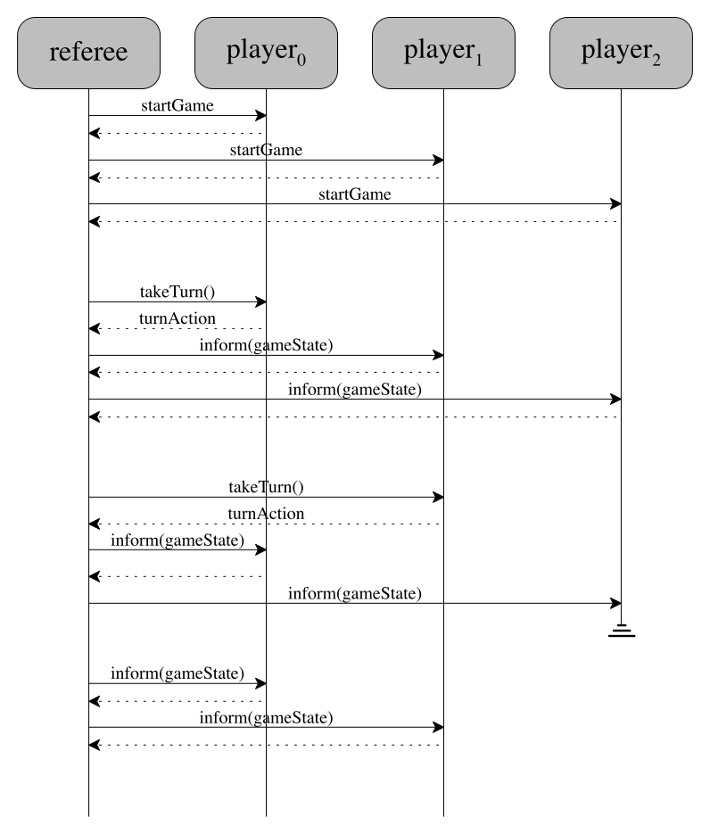

IV Programming Interfaces
13.1 An Interface is the Common Ontology for Clients and Server |
|
|
What is a software component? How are they developed? Used?
As the preceding chapter suggests, the first step of any software development
process identifies all the major components of the system, at least as much as
possible. “Identifying a component” means picking a title or name; writing
down a purpose statement; and perhaps formulating an informal description of the
functionality (or other attributes). Once this much is worked out—
In essence, a component is the location of a major design decision, concerning either an outward-facing piece of software or an internal one needed for some use-cases. A design decision means choosing one of several alternatives: the data chosen to represent some particular information or the data chosen to represent intermediate results; the interpretation mapping data to information and vice versa; some examples if the data definition is complex; plus an expression of functionality signatures.
Creating a single container for a design decision should mean that any necessary revisions of the decision affect only this one place. That is, if unforeseen circumstances reveal the need to implement an alternative choice, a developer can go to this container and make appropriate changes only there. And ideally, such changes should not affect the functionality of the rest of the system. Software developers speak of encapsulating a design decision or of just encapsulation.
the interface, i.e., how others view the component;
the implementation, i.e., how a developer implements the design.
Figure 18 displays a schematic diagram of the
arrangement. A component’s interface shields the internal
details—
Second, everyone else working on the system must develop to the interface of the
component—
This chapter focuses on the design of component interfaces and its consequences; the next chapter is about implementing the hidden details with code that people can understand. Designing a component interface is the key step to designing and implementing the component. It is thus often equated with programming components, hence the title of this chapter. The remaining sections introduce the proper meaning of encapsulation, an approach to designing interfaces, and ways of expressing complete interfaces. In parallel, the sections also illustrate how to inspect interface designs and what such inspections reveal about system-level, architectural decisions.
13 The Nature of Interfaces
What are interfaces? How do they relate components?
While a component consists of code, an interface is a document that explains how this code should interact with the code of other components. As such they inform developers of client code about pieces of the data representation(s) hidden in the component; about the functionality that can create, instantiate, inspect, and manipulate these data representations; about conditions that these operations must obey; and perhaps even about non-functional aspects, such as resource consumption and management. Everything else remains hidden from the developer of client components.
These documents come in many different forms and shapes. In some cases, the document is just an informal description. In some research languages, the interface is just code. For typed mainstream languages, an interface document mixes informal descriptions with language constructs that allow the some amount of compile-time checking of properties.
a component interface is more than a Java interface.
In order to understand how interfaces relate components, we need to take a close
look at components. For a homework in an introductory course, a component may
For an example, take a look at the interface of an
Android media player component. consist of a single class. A follow-up course
may ask students to combine a class with a Java-style interface—
Figure 19: A component as an interface between two system layers
When a component is just a single class, its code is the interface for all the objects created from this class. For example, in Java all public pieces are available to developers of client code in different packages; all private pieces remain hidden; the class encapsulates these pieces. And still, a client programmer must read the code to understand how the object functions.
A (class) framework—
Finally, some bespoke systems may contain components that play the role of an interface. In this case, these interface components sit between two layers of components, and making their code available is needed to completely clarify some rules of interaction. This kind of component is typically beyond lower-curriculum courses and deserves an illustrative explanation.
So let’s return to figure 19, which illustrates this idea
with a diagram. Concretely, the diagram can be understood as summarizing how the
game server for Ticket to Ride—
13.1 An Interface is the Common Ontology for Clients and Server
In some language contexts, developers think of component interfaces as essential
linguistic constructs for separating the specification of functionality from its
implementation; in others, it is just a mental separation of such pieces. While
this separation is definitely an important aspect for all kinds of
reasons—
an interface provides a common ontology for the producers and consumers of a server component.
distance from where to where?
distance measured in terms of which units?
interface Vehicle: |
... |
int moveRight(int distance) |
... |
A common ontology may require a lot more than a simple comment that explains the meaning of a parameter. Let’s once again take a close look at what a “hacker” needs to understand in order to participate in the board-game tournaments of our running example. It is best to start with a close look at figure 17, focusing on the player interface component. As the inspection of the construction plan revealed, the interface is best understood in terms of the game state to which a player component has access. In turn, this data structure refers to the map, the colored cards, the destinations, and the rails. A “hacker” can implement a player only with a complete understanding of these pieces. But this is not all. Additionally, a “hacker” must also know the protocol of how the referee interacts with the player.
the rails
the cards
the destinations
the map
the game state
the protocol: how the methods are called and in what order.
void mapForTheGame(GameMap m) |
|
Set[Destinations] choose(Set[Destinations] from) |
Which set of Destinations should choose return? The ones that the player picked or the ones the player rejected?
Which call order makes the most sense for these methods? Should the player know that mapForTheGame is called only once?
Exercise 8. Provide answers for the above two questions. Justify your answers. Work through these points with a partner.
Different kinds of interfaces call for different kinds of common ontologies. For library interfaces and for the interfaces of plug-in frameworks, the common ontology is often the responsibility of its developer, and the consumer is typically an anonymous developer. Ensuring that the interface is properly explained calls for thorough in-person inspections and reactions to on-line reviews. For bespoke interfaces specifically created for a software system, the producer of the server module and its consumers may jointly develop the common ontology; for an inspection, they may wish to get a third party involved to overcome “group think.” When the consumer of a bespoke interface is unknown, the authors of the interface document should revisit and inspect it with the help of actual an end-users once the product has been soft-launched.
Reading
Ajay Harish. When NASA Lost a Spacecraft Due to a Metric Math
Mistake. 2021.—
14 Encapsulation via Interfaces
While equipping a component with an interface has the primary objective to create a common ontology for producers and consumers, it also means that the existence of an interface relieves developers from reading the entire code of a component just because they need its services. Conversely, a component producer can rely on the existence of an interface in two ways. First, if the interface is written down up front, it can guide the implementation effort. See the next chapter for this idea. Second, the producer can use the interface to isolate design decisions from the rest of the system and thus keep open the option to change them in the future.
As mentioned, developers and programming language researchers speak of encapsulation or say that the design decision is encapsulated. Language designers recognized the importance of encapsulation a long time ago and added various forms of syntactic support to express and check some aspect of interfaces as part of the compilation process. For example, Simula’67 implemented private, protected, and public class annotations by the early 1970s so that programmers could separate what consumers should read from what they could skip. By the 1990s, typed programming languages offered linguistic constructs for specifying the interface of a component separately from the implementing code. Developers working with untyped programming languages must establish and follow some () discipline to express the same kind of separation.
hiding those pieces of knowledge of a component that restrict future changes to a data representation to this one component.
14.1 Interface Inspections for Encapsulation
To gain a solid understanding of the encapsulation concept, let’s study yet another game that could be used in the context of the running game-server example (see A Sample Project: Analysis, Discovery, Planning):
Qwirkle is a game that challenges players to construct an unbounded, contiguous arrangement of rectangular tiles. Each tile displays a shape in one of six colors. A player may add a tile to the map as long as one of its sides is aligned with the side of an already-present tile. Furthermore, the new tile must satisfy certain constraints regarding the shapes of all neighboring tiles, those to its left, right, top, and bottom.
Figure 20: Encapsulating knowledge (a Qwirkle map data representation)
This description clearly identifies four pieces of information: the arrangement, which consists of tiles plus their shapes and colors. Less obviously, it includes the information concept of neighbor, that is, that each tile has at least one and up to four neighbors. One straightforward way to represent neighbor uses a notion of coordinate, associating each tile in the arrangement with one place.
Figure 20 presents a plan in the form of a doodle diagram. It sketches the four concepts and their relationship. Each box denotes a data representation of an information concept. The Map box represents the arrangement of tiles; it suggests the use of a collection to create an association between Tiles and Coordinates. The former combines an instance of Color with an instance of Shape, just as the informal description indicates.
Map is the key class, and all knowledge about the tile arrangement is found there;
similarly, Coordinate, Tile, Color, and Shape are the classes that collect the knowledge about the respective information concepts; and
if any client module needs a service about any of these five concepts, it must consult the respective class.
Hi. I am presenting the design of the central data representation for the Qwirkle game. Here is the class diagram (figure 20). | Could you explain the Coordinate class first? It looks suspicious because it comes with getters for the X and Y fields? |
Sure. Here is the code for the coordinate class (figure 21). It comes with a purpose statement. | This is a comprehensive purpose statement with the inclusion of the second line. But what is the interpretation of a Coordinate object? |
// represents either the location of tiles in the map
// or: places where a player may wish to place a tile
class Coordinate {
private int x;
private int y;
...
public int getX() { return x; }
public int getY() { return y; }
...
}
We stop here and look back. The panel takes control of the code inspection because the diagram alone may suggest a problem. While the presenter and the panel could discuss this potential problem abstractly, working with the actual code is best in this situation.
Interpretation? | Well, an X-Y pair may denote Cartesian or computer coordinates. |
Ah, we had the standard computer-graphics meaning in mind. | This statement should be added to the class so that a reader of the code doesn’t have to dig through the entire class to find out. |
I will make sure an interpretation gets added. | Why does the class include plain getters for the fields? |
The two integers are private. But the Map class needs access to their values. | What for? And how are they used? |
Here is the code for Map (figure 22). | Where do the getters used? |
All the computations matching a tile to its potential neighbor use the getters. | Let’s take a look. |
class Map {
private Assoc<Tile, Coordinate> assoc = ...
...
// would `toBePlaced` at coordinate `atC` match
// the color and shape of its up neighbors
Coordinate up = new Coordinate(atC.getX(), atC.getY() - 1);
Is<Tile> neighbor = this.assoc.retrieve(up);
Boolean matchesUp = !(neighbor.none()) && this.match(neighbor.some(), atC);
...
}
It’s probably best to look at the computation that makes sure tiles match an up neighbor. These three lines are the key. | This comment cleanly separates one direction from the other. Can you explains the three lines? |
The first line computes the place that is exactly above the given coordinate. | How does this computation work? |
It retrieves X and Y parts, subtracts 1 from the latter, ... | Stop. Why does it subtract 1? |
Isn’t it the natural way to determine the Y part of the place above the given c? | Only if the person who reads the code of Map also knows the interpretation of the Coordinate class |
Oh. | .. which isn’t even written down. |
At this point, the panelists have clarified why the Coordinate class does not encapsulate the coordinate information concept from the problem statement. Even though the x and y fields are private and thus hidden, exposing plain getters leaks knowledge that should stay internal to the class, specifically its interpretation. Here the presenters know that the interpretation of Coordinate is the normal computer-graphics meaning, that is, if y1 < y2, then y1 is above y2. Thus computing atC.getY() - 1 gets the correct result in this case. If, for some reason however, the instances of the Coordinate class should be interpreted as ordinary Cartesian coordinates, changing just Coordinate will not work.
14.2 Encapsulating Properly
whether a change in interpretation or any internal code can possibly affect application code, i.e. code that uses the functionality of the class or module.
In Java, and many object-oriented languages, the most basic meaning of “interface” is the collection fields, methods, and other pieces of an object design that are accessible to a client programmer. This collection may or may not come with a Java interface or an Interface document; indeed, a Java component may need both.
interface ICoordinate {
// INTERPRETATION
// a data representation
// for Map coordinates
...
// the place logically
// above `this` coordinate
Coordinate above();
...
Coordinate below();
...
Coordinate left();
...
Coordinate right();
}
class Coordinate {
private int x;
private int y;
...
public Coordinate above() {
int newX = this.x;
int newY = this.y-1;
return
new Coordinate(newX, newY)
}
...
}
Figure 23: A Java-style class for an encapsulated coordinate representation
Let’s take a look at how a Java developer could react to the code inspection. The minimal reaction is to remove the getters from the class; in their place, the class comes with methods that determine the coordinates of neighboring places. For example, the code snippet of the Map class (in figure 22) would use the method above to compute the value of matchesUp. See the right-hand side of figure 23 for the result of such a revision.
The left-hand side of figure 23 displays a
second, complementary way of reacting to the criticism—
15 Designing an Interface
Figure 18 shows two ways of looking at an interface: as the producing developer and as the consuming one. From the perspective of the first, it is the document that guides the implementation. The component must live up to this interface; it must implement the promised functionality and everything else that the document says it delivers. From the perspective of the second, it is the document that tells everyone how to use the component.
As such, the figure suggests that an interface is the result of a “negotiation” between the two parties. In many cases, a consumer would like to get a lot more functionality than the producer wishes to show. The consumer may even like to know more about the design decisions and the resulting implementation details than the producer wishes to make publicly visible.
The word “negotiation” seems to imply that the producer knows the consumer but this clearly isn’t always the case. A component might be one-of-a-kind, a part of a large bespoke system, and the two parties know each other to actually negotiate the interface. Historically, component meant a library. Once developers primarily used object-oriented languages, these components became frameworks, such as the game server analyzed in the preceding chapter. Given this variety, the design of an interface is clearly not going to follow one and only way either.
Since the role of an interface includes encapsulation of design decisions,
understanding the interface-design process can start with asking how future
changes affect an interface. When a change of a bespoke component affects its
interface—
By contrast, the producers of a library or framework rarely know their consumers
and must therefore be much more careful about changes. In many cases, changing
the interface is nearly impossible. External programmers and developers may have
created extensive bodies of code relying on the published interface. Hence,
removing functionality is essentially impossible, which imposes constraints on
changes to internals of the component. Adding named functionality to the
interface may interfere with names that client programmers chose for something.
Finally, even changing a “bug”—
Exercise 9. Research how the designers of Java introduced modified
libraries when they added expressive power to the type
system—
In sum, designing library and framework interfaces requires considerations in
two directions—
It should start with a succinct, focused purpose statement.
When needed, it should include a possibly partial interpretation of the implemented data representation(s).
It should specify the functionality that the component makes available. These specifications typically contains the following kinds of functionality, though not necessarily all:
ways to create or initialize a component;
ways to observe properties of the state of the component;
ways to extract properties from the state of the component; and
ways to modify the component’s state.
Each of these specifications states the name of the functionality; its purpose (unless the name is truly bringing across what the function computes); a signature, possibly expressed as a comment if the underlying language is untyped; and any constraints that the signatures cannot express.
Finally, an interface often comes with constraints on pieces of functionality or the interaction of various pieces of functionality.
Process Given the nature of an interface as the result of a “negotiation,” the design process should involve both parties. The creator is clearly in charge of proposing drafts of an interface. But, a representative consumer must often, and perhaps continuously, check whether it is possible to get work done with the proposed interface. If the consumer representation determines that the interface lacks functionality or is too inconvenient to use, it is back to the drawing board for the producer of the component.
What these sentences describe is a feedback loop. Figure 24 shows the essential elements of this interface-design feedback loop. The process starts with the vague idea cloud on the left, which symbolizes the perceived purpose of the component and its publicly visible pieces. Once the developer writes down a draft of the component’s interface, someone must inspect this draft from the perspective of writing a client component. This evaluation step results in suggestions on how to modify either the starting point or the written document or both. Once the interaction has converged on an interface document, the producing developer can (finish) implement(ing) the component’s internals.
Keeping this feedback loop in mind, let’s take a close look. Like for any building block in the world of software development, the design process for interfaces must start with a focused purpose statement. Without such a statement, it is too easy to pack too much functionality into an interface or even too little. That is, when during the somewhat parallel development of the component and its interface questions arise as to where functionality should reside, a focused statement can help answer them.
“if the class represents coordinates, why are there basic computations on coordinates in the Map class?”
which parts of the component must remain hidden; and
which parts to make public and what explanations are needed so that client programmers can get their work done.
For the first aspect, the authors of interfaces must decide how much of the data interpretation to encapsulate. It is the interpretation that really describes hidden pieces. Take the Coordinate class as an example again, a client programmer doesn’t need to know whether the coordinates are of the Cartesian or computer-graphics kind. Even the existing purpose statement implies this much. Hence the interface designed should not make any functionality available that allows client code to determine the Y dimension of a coordinate.
For the second aspect, the authors of the interface must imagine the use contexts with the goal of identifying desirable functionality. In the case of one-of-a-kind components, the system specification usually provides a sufficient number of hints. The code inspection of the preceding section exposed one concrete use case, and this use case also clarifies the exact functionality needed from the Coordinate class. When it comes to libraries, the interface authors must use their imagination as to how developers may wish to use the component’s functionality.
start by writing down a focused purpose statement
imagine a client component by name
informally write down descriptions of public information:
a data interpretation;
the purpose of the pieces of functionality;
signatures, formal ones if a typed language is used;
any additional constraints on the latter.
sketch use cases based on the informal interface description;
formulate alternatives, based on these use-case considerations;
inspect the informal design and request comments
re-start at step 3 or even step 1, until the process converges.
15.1 Inspecting Simple Interface Designs
The diagram of figure 20 is a good starting point for illustrating how a software developer may develop an interface. Recall that the figure relates data representations of all the Qwirkle game pieces, plus the synthetic Coordinate class and their relationships. So imagine that a developer for our game-server start-up wishes to write down an Interface for this component. Notice the capital “I” because this section is not about a Java interface even though it ends up using Java notation.
The component represents all basic game pieces for a variant of the Qwirkle game.
As for clients of this component, two come to mind: the referee that resides on the game server and the player that the start-up team must produce to test the referee. Both need to create, inspect, and manipulate maps and the tiles that make up these maps. The referee must maintain the map that all players see; as such it must be able to create the initial map, add tiles on behalf of players, check the legality of such player requests, and so on. A player component may need to compare the value of two distinct maps, each created by adding different tiles to the map that it receives when it is told to take a turn. These rough sketches of client suggest that three classes definitely must be public: Map, Tile, and Coordinate.
**Component** : represents all basic game pieces for Qwirkle
Its public classes and their public methods:
- Map : a data representation of a contiguous collection of tiles
- create : creates the map, from a starter tile, so that we do
not have to deal with the degenerate case of an empty maps
- adjacentPlaces : delivers the coordinates where tiles can
be added to `this` map
- addTile : adds a tile to `this` map at coordinate `c` that
is adjacent to an existing tile
CONSTRAINT: `c` is in `this.adjacentPlaces()`
- fits : checks whether a tile would fit at coordinate `c`
according to the rules
- render : display `this` map as an image
RATIONALE: looking at a visual presentation of facilitates
the creation of unit tests
- Tile : a data representation of (valid) tiles
- create : creates a tile from a shape and a color;
CONSTRAINT: consumes plain strings, then checks validity
- getters for shapes and colors (returns strings)
- Coordinate : a data representation for places on a Map
Figure 25: A draft interface for the basic games pieces component
Equipped with a purpose statement and a quick look at client components, our imaginary developer can enumerate some basic and public pieces of functionality for the three classes that are going to be public. Figure 25 displays the result of this first attempt.
// ignore the !isPresent() case
Placement pickNextCoordinate() {
Stream<Coordinate> free = map.adjacentPlaces().stream();
Coordinate best_coord = free.findFirst().get();
Tile best_tile = this.availableTiles.get(0);
for(Tile t : this.availableTiles) {
Stream<Coordinate> legal =
free.filter(c -> map.fits(c,t));
Coordinate best_t =
legal.max((c, d) -> evaluate(c,t) > evaluate(d,t)).get();
if (evaluate(best_t, t) > evaluate(best_coord, best_tile)) {
best_coord = best_t;
best_tile = t;
}
}
return new Placement(best_coord, best_tile);
}
Figure 26: A sketch of a method for picking a player’s next tile placement
Could 17 or 17.1 be incorporated into this chapter to illustrate weighing alternatives? |
|
let's work through an example with an interface for the component that represents |
all the Qwirkle game pieces |
|
then let's work through one aspect of a complex example to study serious |
alternatives: |
-- feedback-loop style design often means presenting and discussing alternatives. |
|
-- one aspect to consider: once the functionality interface is done and a first |
implementation of the component exists, it may already be time to consider |
simple performance stress tests. Example: queue |
|
-- after release: be prepared to fix; it is critical to backwards compatible as |
much as possible |
16 Expressing an Interface
// represents either the location of tiles in the map
// or: places where a player may wish to place a tile
interface ICoordinate {
// INTERPRETATION a computer-graphics coordinate
// the coordinate directly above this one
Coordinate above();
// the coordinate directly below this one
Coordinate below();
...
}
Figure 27: A Java-style interface for the Coordinate class from figure 23
expression: |
- types: static checks; highly successful |
- behavioral contracts; often documented |
- pure pre and post conditions; |
- dependency on argument -- does it get checked in the post condition? |
- protocols: almost always documented only |
- order of calls |
- history dependency of calls |
contracts !!
Here is a piece of functionality:
(define (create width height channels colorspace) |
(unless (> width 0) |
(error 'create "expected width > 0: ~a" width)) |
(unless (> height 0) |
(error 'create "expected height > 0: ~a" height)) |
(define size (* width height)) |
(unless (<= size P-MAX) |
(error 'create "expected width * height <= ~a: ~a" P-MAX) size)) |
(unless (<= 3 channels 4) |
(error 'create "expected channels = 3|4: ~a" channels)) |
(unless (<= 0 colorspace 1) |
(error 'create "expected colorspace = 0|1: ~a" colorspace)) |
(define load (make-bytes (* 4 size))) |
(private-image width height channels colorspace load)) |
Instead write a contract that informs client programmers about the constraints:
[create
(-> (and/c integer? (>/c 0))
(and/c integer? (>/c 0))
(between/c 3 4)
(between/c 0 1)
image?)]
(define (create-image width height channels colorspace)
(define size (* width height))
(unless (<= size P-MAX)
(error 'create "expected width * height <= ~a: ~a" P-MAX size))
(define load (make-bytes (* 4 size)))
(private-image width height channels colorspace load))
If it is critical to let the “client” of create know about the size restriction, incorporated a constraint into the contract:
[create |
(->i ([width (and/c integer? (>/c 0))] |
[height (and/c integer? (>/c 0))] |
[channels (between/c 3 4)] |
[colorspace (between/c 0 1)]) |
#:pre (width height) (<= (* width height) P-MAX) |
(r image?))] |
|
(define (create-image-2 width height channels colorspace) |
(define size (* width height)) |
(define load (make-bytes (* 4 size))) |
(private-image width height channels colorspace load)) |
- the ``game plan'' |
- the milestones, planning one step ahead |
- iterative: refine as you go but keep the overall idea in mind |
- contracts? |
: Methods and Functions are the Basic Building Blocks |
- keep them small |
- develop them systematically: design recipe |
17 Interface Inspections, Systematically
Reconcile with the below
the player is informed of any change to the publicly visible state of the game as soon as it happens
A combination of formal code with informal comments has direct implications for the development process. While language implementations can check the formal elements of interfaces, the informal ones don’t undergo any mechanical validation. Hence, implementing interfaces or referring to them in other modules quickly reveal flaws in their formal elements. The informal ones, however, aren’t subjected to this form of mechanical checking and tend to remain flawed more easily. It falls to the team as a whole to ensure that the interface component is complete, logically coherent, and unambiguous.
Frequent and thorough inspections can help achieve this satisfactory mix of
formal and informal interface elements. For external interfaces, it is also
necessary to work with the person in charge of writing the visible
documentation. Indeed, once a team thinks some interface documentation is ready
for release, it should still ask an outsider—
17.1 Inspections and Design Alternatives
The inspection of the construction plan points to an implicit design decision
when one of the reviewers asks about the back-and-forth between referees and
players. As imagined, the conversation glosses over the rather obvious question
whether there are alternatives to the presenter’s idea of using a
RESTful—
We discussed the various ways in which the referee may interact with the players. But, it turns out there are two alternatives. | Can you summarize these alternatives with a few words or perhaps an adjective? |
Sure. The first one is a functional interface. Here is the spec (shows figure 29). | What does “functional” mean here? |
The referee calls the player with all of the relevant data, and the player returns a complete response. | Is it correct that the signatures and the type definition of TurnAction suggest a response is a request to the referee? |
Yes. The referee executes actions on behalf of the player, especially for turns, so it can check their legality. | Agreed. The referee can check because it knows everything about the game and the players’ game pieces. |
And to take a turn, a player must know what other players have done during their turns. | When we discussed the construction plan, we settled on adding a public game state component for this purpose. |
Correct, but the existence of this component is not enough. | What else do we need? |
We need to settle on when to convey this game state from the referee to the player. | That makes sense. The signature of takeTurn tells us that the player receives a GameState when it is told to take a turn. |
Yes. That’s what “functional” means. The player can compute the desired action from the given information for the one call. | Doesn’t it need the GameMap and the Destinations? |
The referee could include those in the GameState, or we could agree that these two pieces of information are essentially global constants. | Yes, sending them over with the first method suffices. And now it is clear why this proposed take-turn method is easily testable. |
Good. Ready to move on to the alternative? | Let’s take a look at the alternative. |
The interface in figure 29 employs no known programming language (but alludes to some) and thus deserves a bit of additional explanation. It specifies five named pieces of functionality via functional signatures. Each signature lists the input types first, followed by ->, and a result type. Finally, each piece of functionality is accompanied by a purpose statement, a comment that explains what (not how) the functionality computes.
The bold-faced signature of the takeTurn functionality is an illustration of what “functional” means. The function consumes a GameState and returns a TurnAction, a type that is indicated to exist but isn’t defined yet. The takeTurn functionality is not supposed to need any other information to determine the action that the player wishes to take.
Here it is (shows figure 30). I have bold-faced the difference to the first alternative. | What does the additional functionality provide? |
It informs the player about state changes. | When does this update go out? |
As soon as one player finishes a turn. | Does the referee send out the new state or just the change information? |
It is simplest to send out the entire state. | Why is that? |
There are several kinds of changes that can happen. | True. A player may choose different kinds of actions. |
Correct, and even worse, a player may fail to respond. | It makes sense. Sending the entire state covers all possibilities. |
The signature of takeTurn in the alternative interface says that this functionality does not consume any arguments. By implication, the player must get the relevant information about the GameState from calls to other methods. This is where the additional method, inform, comes in.

Figure 31: A diagram illustrating stateful interactions (figure 30)
What these textual interfaces do not show clearly is how these functions relate to each other. A design inspection should pick up on this aspect:
| So the referee calls inform as soon as the state changes? |
Its purpose statement says so. | Oh. Is there anything better? |
We doodled a diagram on a napkin (shows figure 31). | Can you walk us through this diagram? |
The components are listed at the top. The vertical lines below are their life lines. | Does time flow from top to bottom? |
It does. And calls go from one life line to another. | Just to clarify. Do the first three calls show us how the referee sets up the game? |
They do. And the dotted lines go in the reverse direction to indicate that the result is Void. | In that case the second batch of arrows indicates how the referee runs a single turn. |
Yes! The call arrow indicates that the referee requests a decision. And the return arrow says player0 tells the referee which action it wants to take. | And then the diagram very clearly says that the referee immediately uses inform to tell the other two players of the action. |
As this dialog illustrates, this kind of diagram—
One more thing. Check the bottom of the player2 lifeline | Right, what does the triangle mean? |
It indicates that the client component terminates, possibly in an irregular fashion. | That seems to be a special case. |
We wanted your opinion about it. | Does it mean player2 does not respond? |
Precisely. | And do the next two arrows mean player0 and player1 find out about player2 and its unresponsiveness? |
We were thinking that such a player should be terminated and the others should immediately find out. | It seems to be a reasonable decision, considering that the players will exist on remote computers and such a failure could cause havoc for the overall system. |
This is what we decided | To confirm. At the bottom of the sketch, both players have the information. |
Figure 32: A diagram illustrating RESTful interactions (figure 29)
The dialog brings out how the inspecting team members can infer the correct timing of calls from these diagrams. Specifically the last two interactions clarify when player components find out what about their peers.
Additionally, the construction of the diagram allows the designers to present a potentially ambiguous error situation. Even if all components exist in a single program in one and the same programming language, a bug in the player component could bring down the entire system. Similarly, a remote component may become unresponsive due to other reasons. Given that the team has decided that such single-component failures should not terminate the game server, the team should inspect how referee reacts in these situations and what players find out about them when.
| Do you have a doodle diagram for what you originally called the RESTful alternative? |
Yes, we have such a sequence diagram for the functional alternative (shows figure 32). | Is it worth comparing the two? |
It is is quite instructive to compare them, especially the failure scenarios. | What can fail here? The player doesn’t have an inform functionality. |
True, but any method can fail. | Of course. It looks like you worked through a failure of the takeTurn method to player2 this time. |
Exactly. Notice how the lifeline of player2 ends during the call, before it returns a turnAction. | Is it correct that the next call of the takeTurn method to player0 delivers this knowledge about the elimination of player2 as part of gameState? |
It does. And you probably guessed that player1 has not found out yet. | Yes, that’s clear. You should add these diagrams to the repository and point to them from the README file. |
Exercise 10. Consider the follow scenario. The referee successfully calls a method of player1 but the player fails after it returns a takeAction result. When do player0 and player1 find out according to the two alternative interfaces? Sketch sequence diagrams. Work through these diagrams with a partner.
Exercise 11. The design inspection has demonstrated that the interface of figure 29 differs from the one in figure 30 in significant ways. Write down a concise explanation of an advantage or disadvantage to the developer of the game-server software, and similarly, articulate an advantage or disadvantage to the developer of the player clients. Work through these points with a partner.
Old Material
Deep down buildings consist of bricks and mortar, but what people see are walls and ceilings. These large pieces hide the fundamental building blocks, and over time, what they consist of changes. Often these changes enable the construction of much larger building from one era to another.
Software systems are the analogues of entire houses or even highrises. Just like
with buildings, the fundamental building blocks—
More Old Stuff
As a result, an interface is probably the most important example of writing that isn’t (just) code. At a minimum, an interface demands supplementary descriptions of what the arguments and the results of a method or function mean. Similarly, interfaces of bespoke components or sophisticated frameworks work properly only if additional conditions are met. Often these conditions are about temporal relationships among method calls; at other times, they concern the connection between the values of different calls to the same method. Finally, contemporary software systems also offer interfaces for external developers, people whom the team members are unlikely to ever meet. These interfaces tend to impose the same kinds of logical and temporal constraints as internal ones as well as formatting specifications for remote access.
—
Designing an interface can go wrong in several ways. It may expose too much |
functionality and information about the internals, as in the Coordinate |
example of the preceding section. The interface may expose too little |
functionality. And, the interface may be in conflict with the actual |
implementation. |
|
Once released, changes to an interface should come with versioning so that the |
creators of client code can specify which version of the |
interface-implementation combination their code depends on. When the creator of |
a framework releases a new interface, the release documentation must clarify in |
what way the new version may break compatibility relative to the preceding |
version. Documenting this compatibility comparison helps programmers adjust |
application code; in the ideal case, new releases are backwards compatible, meaning client programmers can switch from the old to the new |
version without problem. |
|